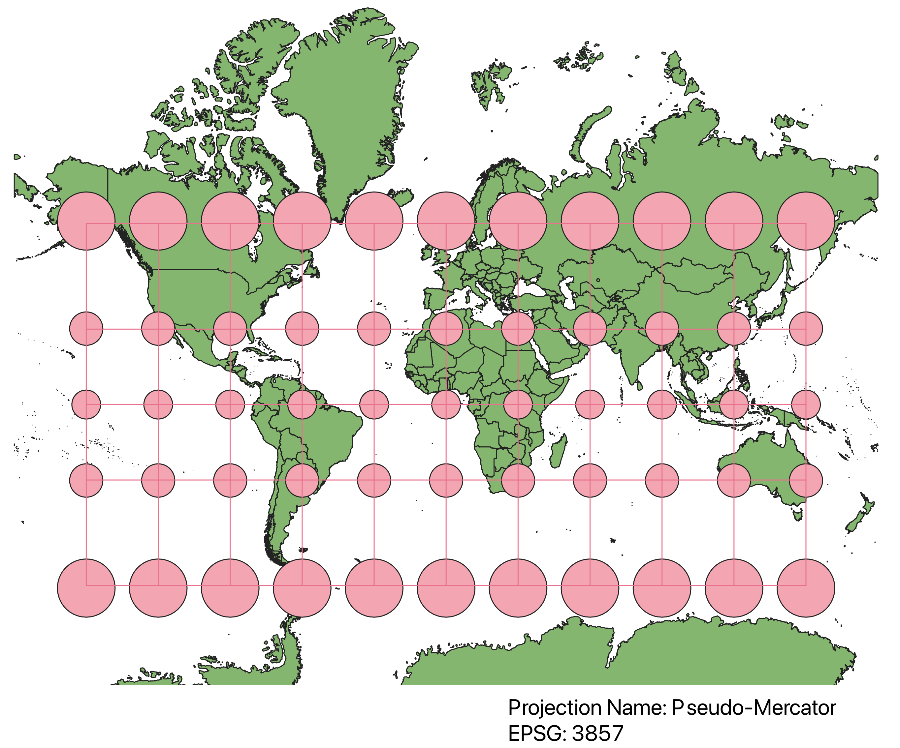

Homework 3: Github page (World Projection Maps)
To display the world map in all of the different projections below, I imported the provided shapefile to QGIS, and in the lower right corner, changed the projections to my liking. I
then downloaded and installed the indicatrix mapper, and then clicked on the indicatrix icon on the top bar and enabled it, which created a layer of lined circles at different
latitudes on the map to show the relative size of that specific latitude. After getting this layer, I formatted the map with descriptive text and then uploaded it to my local files as a
png file.
Pseudo-Mercator Projection
Pseudo-Mercator Projection projects the spherical contents of the globe onto an unrolled cylindrical surface in order to preserve a grid-like layout.
This causes areas near the poles to be expanded in size relative to their actual size, while keeping areas close to the equator to maintian their size.
